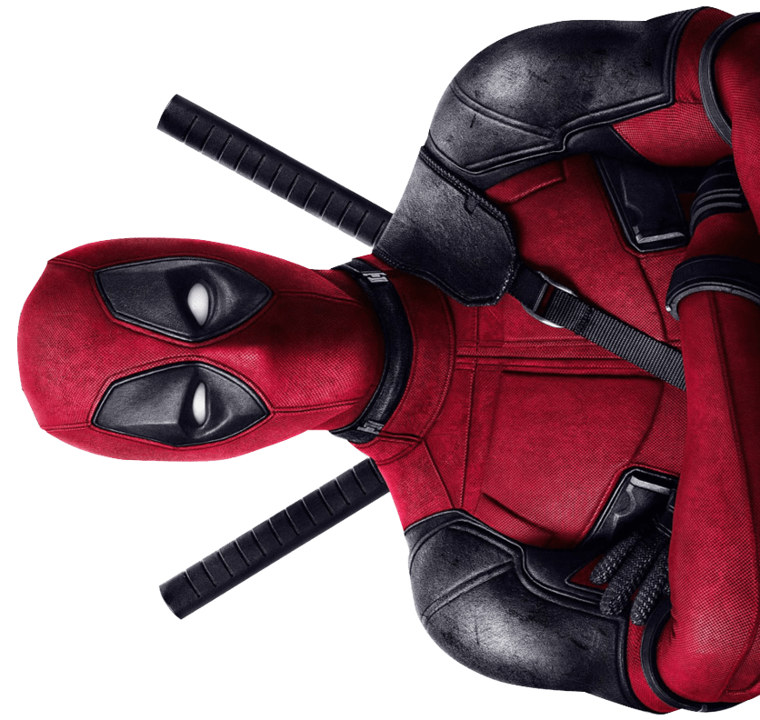
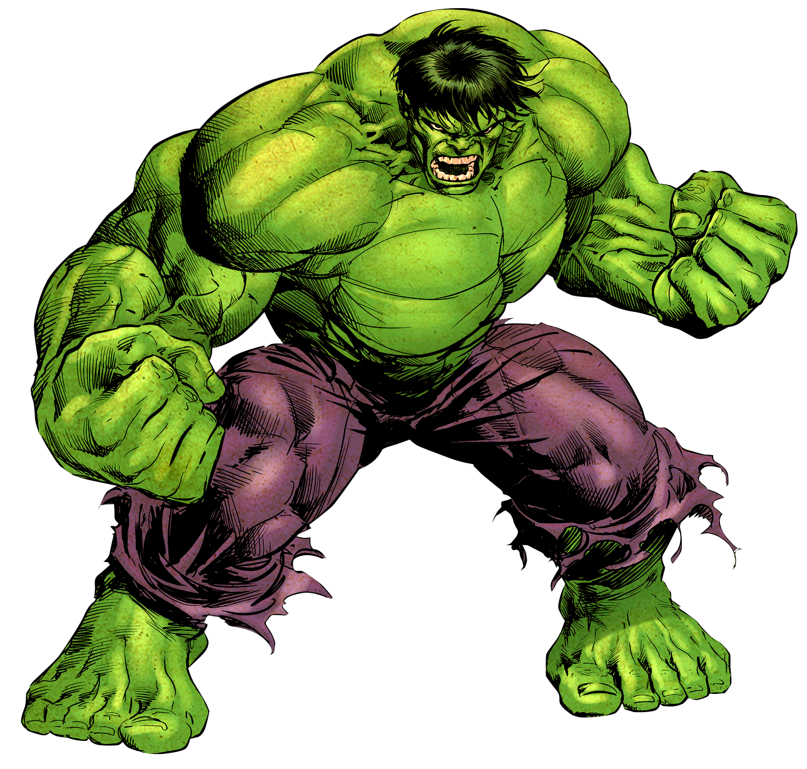
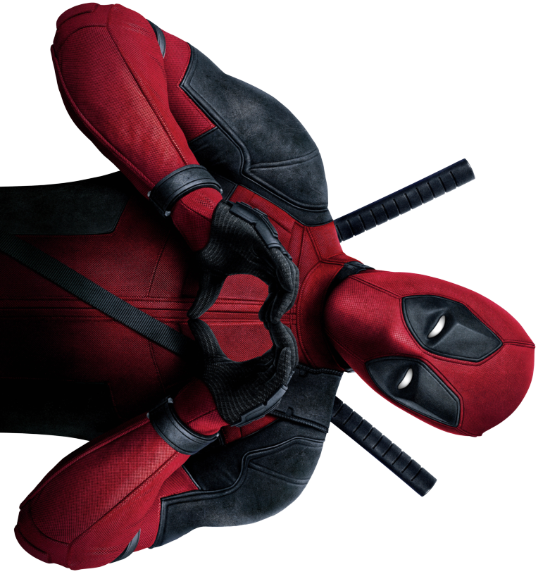

Deadpool é um anti-herói sarcástico conhecido por seu humor irreverente e fator de cura acelerado. Ele quebra a quarta parede, conversando com o público enquanto luta com habilidade e criatividade. Embora caótico e imprevisível, Deadpool frequentemente faz o bem à sua maneira única, conquistando fãs com sua personalidade excêntrica e ação desenfreada.
O Hulk é um herói poderoso conhecido por sua força descomunal e raiva incontrolável. Quando Bruce Banner se transforma no gigante verde, ele se torna praticamente invencível, capaz de superar qualquer obstáculo com pura força bruta. Apesar de sua aparência monstruosa, o Hulk luta para proteger os inocentes, equilibrando a fúria com o desejo de fazer o bem.
 O Pantera Negra é um herói majestoso e estrategista, líder da nação avançada de Wakanda. Como T'Challa, ele combina habilidades sobre-humanas com inteligência e tecnologia de ponta, protegendo seu povo e o mundo. Seu traje de vibranium e seu senso de justiça o tornam um dos heróis mais respeitados, equilibrando a tradição com o progresso.
Wolverine é um herói icônico conhecido por suas garras de adamantium, fator de cura regenerativo e atitude feroz.
Com um passado misterioso, ele é tanto um guerreiro implacável quanto um sobrevivente resiliente. Seu instinto animal e sua busca por justiça o tornaram um dos personagens mais amados e complexos dos quadrinhos.